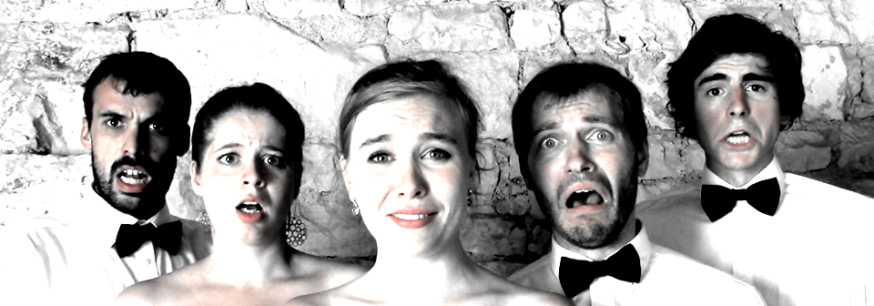
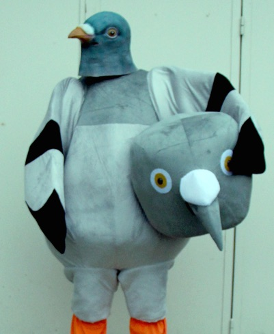

glitcher le chant
une ode numérique à la voix cassée
ensemble 101
=======Vertical Slides
Slides can be nested inside of each other.
Use the Space key to navigate through all slides.
Basement Level 1
Nested slides are useful for adding additional detail underneath a high level horizontal slide.
Basement Level 2
That's it, time to go back up.
L’ensemble 101 est un collectif de chant contemporain.

En privilégiant un lien réciproque entre la création et l’interprétation, les cinq chanteurs de l’ensemble construisent un catalogue d’œuvres propre à leurs voix et à leur personnalité. 
|  | chant contrainte numérique fantaisie |
L'ensemble 101 et le « classique »
Fragments
Hit the next arrow...
... to step through ...
... a fragmented slide.
Fragment Styles
There's different types of fragments, like:
grow
shrink
fade-out
current-visible
highlight-red
highlight-blue
La musique classique et ses publics à l’ère numérique
Questions
- Quelles sont les caractéristiques et l’étendue des inégalités sociales et culturelles d’accès à la musique classique ?
- L’idée de générations culturelles différentes est elle pertinente dans l’explication des évolutions de la musique classique ?
- Comment la musique classique s’articule-t-elle aux nouvelles expressions musicales et aux autres pratiques artistiques ?
- Quelle est la place de la musique classique dans la reconfiguration de la culture savante et légitime ?
- Le numérique fait-il émerger de nouveaux publics ou de nouvelles pratiques ?
Themes
reveal.js comes with a few themes built in:
Black (default) -
White -
League -
Sky -
Beige -
Simple
Serif -
Blood -
Night -
Moon -
Solarized
Réponses
- Grande et protéiforme.
- Oui.
- Doucement.
- Centrale.
- Oui.
Glitcher le chant
mode d'emploi
Trois parties
... and GIFs!
Partie № 1
La musique
Deux études de cas

|

|
La DRAC
Ou(X)Po

YouTube
Google Grants
Question
Google Grants, permet-il d'effacer les inégalités sociales et culturelles d’accès à la musique classique ?Nord-Pas de Calais
La clef des chants
A.R.T.S.
Résidence à HazebrouckQuestion
Les institutions culturelles qui dépendent de l'état, sont-elles des vecteurs efficaces dans l'égalsation d'accès à la culture ?La DRAC
macompagnie
Question
La DRAC, correspond-elle toujours au fonctionnement de ma génération culturelle ?L'Ou(X)Po
Ecriture sous contrainte
Tu n’auras pas d’autre adultère que moi.
Tu tueras tes esclaves, car je suis l'Éternel, qui t'ai fait sortir d'une
maison d'esclavage.
Tu penseras à observer l’adultère de ton prochain.
Tu ne commettras pas de faux meurtre.
Tu honoreras ta servante le jour du Sabbat.
Musique sous contrainte
| The Wonderful Wizard of Oz | Lieder ohne Worte |
Question
Les groupes ou(x)piens, contribuent-ils à la reconfiguration de la culture savante en France ?Partie № 2
Le numérique
{audioguide]

Sit Ozfårs Wysr

{audioguide]

Applications smartphone
Guggenheim MoMA
Question
L'art total contemporain, augure-t-il la mort du concert ?Sit Ozfårs Wysr
Livret
| frizn | français | anglais |
| Sit by, Ttö ? | Regarde l’arc-en-ciel, Toto. Il brille de mille feux multicolores. Ici, tout est si plat, si moche, si vieux, si gris, si terne, enfin inqualifiable par des mots. Ressens-tu cela, Toto?! Toi, un pauvre chien dont les capacités affectives sont limitées par une défaillance d’hygiène. Un jour, on ira là-haut ensemble ! ! | That’s a rainbow. We should probably go there. |
| Ttö lick sit grönpysinbladutsidsmalfårs- klmbspermlosvitfårsgryplantqvikfårs- anorexiksizrfårsfartfårs_fårsfårs ? | J’aime l’herbe ! ! | I like grass. |
| Chhhhh ? | Idiot. | I love you. |
Frizngård vivra sur...
Wikipédia Facebook TwitterQuestion
Les « ajouts » numériques, font-ils partie d'une œuvre ?Partie № 3
Le glitch
OVERTIME
norman (age 43) drops the ten
commandments
OVERTIME
un ensemble qui glitch
Ce spectacle est affligeant.
Si vous voulez entendre des bruits d'animaux et des chants qui donnent la migraine en continu allez voir cette pièce.
Drôle, étrange et loufoque. On rentre dans une bulle de folie enivrante, un royaume loin, loin des conventions.
Une histoire complètement déjantée et surprenante, dans un univers surréaliste et émouvant.
Ça sort des sentiers battus, ça nous donne à voir et à entendre une oeuvre de "théâtre musical" absolument originale.